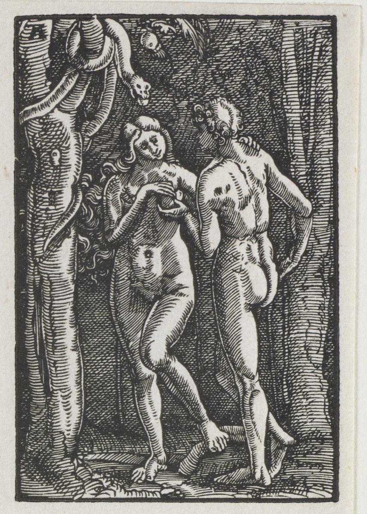

Romanos 5 — La Traducción Mister

⚠ El Cleveland Museum of Art, cuyo registro sigue el archivo de Commons, titula el grabado «Adam and Eve Eating the Forbidden Fruit» (Adán y Eva comiendo el fruto prohibido) y dice que es uno de cuarenta grabados en madera, impresos de ocho en ocho en una hoja y cortados después, que cuentan la historia de la redención cristiana desde el pecado original hasta el Juicio Final; lo fecha hacia 1513. Lo que muestra el grabado es el momento antes de comer: la serpiente en el árbol, la mujer con el fruto, el hombre volviéndose hacia ella. Romanos 5 no menciona el huerto y nombra a Adán solo en el versículo 14, pero el título de la serie, una caída y una redención en un solo juego de grabados, es la comparación que el capítulo traza entre el hombre único y el hombre único, Jesucristo.
Notas del traductor — versículo por versículo
Cada nota explica la decisión de esta traducción y compara las versiones del estante. Las citas de versiones con derechos de autor (NVI, TNM) se limitan a frases breves para la comparación; la Reina-Valera de 1909 es de dominio público.
«Habiendo sido justificados, pues, por fe» (Romanos 5:1). Dikaiōthentes oun ek pisteōs. El corte de capítulo es de los editores, no de Pablo: el griego sigue de corrido desde el último versículo del capítulo 4, donde Jesús fue «levantado por causa de nuestra justificación». El participio con que empieza este versículo es el mismo con que empieza el versículo 9 (dikaiōthentes), de modo que la primera mitad del capítulo queda encerrada por la misma palabra, y el verbo es dikaioō, «justificar», el verbo de Romanos 3:24 y 3:28. La preposición es la de Romanos 3:30, ek pisteōs, «por fe». Lo que sigue en el capítulo es lo que tiene el justificado: paz, acceso, un lugar donde estar de pie, un motivo para gloriarse.
⚠ «Tenemos» o «tengamos» (echomen o echōmen). El aparato muestra una letra en disputa. El texto impreso, echomen, es indicativo, «tenemos paz»; Nestle–Aland 28 y Robinson–Pierpont coinciden con él. Westcott–Hort y Tregelles imprimen echōmen, subjuntivo, «tengamos paz». El indicativo declara lo que la justificación ha producido, en la misma serie de perfectos y presentes que sigue en el versículo 2 («hemos obtenido», «estamos de pie»); el subjuntivo convertiría el versículo en una exhortación, con la paz como algo todavía por tomar. El estante se reparte. RV 1909 «tenemos paz para con Dios», RV60 «tenemos paz para con Dios» y NVI «tenemos paz con Dios» imprimen el indicativo; TNM «gocemos de paz con Dios» imprime el subjuntivo, y su revisión de 2019 dice «disfrutemos de la paz con Dios». La Vulgata tiene pacem habeamus, también subjuntivo (comprobado en el texto clementino de vulgate.org). La preposición es pros, «hacia» o «con»: las dos Reina-Valera conservan la dirección con «para con», y la NVI y la TNM dicen «con». La paz es lo contrario de lo que nombra el versículo 10, la enemistad, y de la ira con que abrió Romanos 1:18.
«Acceso a esta gracia en la cual estamos de pie» (prosagōgē, Romanos 5:2). Di’ hou kai tēn prosagōgēn eschēkamen tē pistei eis tēn charin tautēn en hē hestēkamen. El sustantivo prosagōgē, «acceso», está en tres versículos del Nuevo Testamento (prosagōgē, buscado): este, Efesios 2:18 («porque por medio de él ambos tenemos acceso, en un solo Espíritu, al Padre») y Efesios 3:12 (todavía no en estas páginas). Está construido sobre prosagō, «llevar hacia adelante», y eschēkamen es un perfecto, «hemos obtenido y seguimos teniendo», con el camino de entrada dado como «por medio de quien», de modo que el acceso se concede y no se gana. El destino es un estado, «esta gracia», y el segundo perfecto, hestēkamen, dice que hemos tomado nuestro puesto en ella y estamos allí de pie. La gracia fue la palabra en 3:24 («gratuitamente por su gracia») y en 4:16 («es de fe, para que sea según gracia»); aquí es un lugar. RV60 «tenemos entrada por la fe a esta gracia en la cual estamos firmes» y RV 1909 «tenemos entrada por la fe á esta gracia en la cual estamos firmes» dicen «entrada» y «firmes»; NVI «tenemos acceso a esta gracia en la cual nos mantenemos firmes» dice «acceso»; TNM «hemos obtenido nuestro acceso por fe a esta bondad inmerecida» cambia «gracia» por «bondad inmerecida», y la revisión de 2019 dice «hemos obtenido acceso por fe a esta bondad inmerecida de la que ahora disfrutamos».
«Nos gloriamos en la esperanza de la gloria de Dios» (kauchōmetha). El capítulo 3 dejó fuera la jactancia («¿Dónde está, pues, la jactancia? Fue dejada fuera», 3:27) y el capítulo 4 no dio a Abraham nada de qué jactarse «delante de Dios» (4:2). Aquí vuelve el verbo, y aquello de lo que uno se gloría ha cambiado: no una obra sino una esperanza, y esa esperanza es la gloria de la que Romanos 3:23 dijo que todos se quedan cortos. El verbo es kauchaomai; está en este capítulo tres veces, en los versículos 2, 3 y 11, y siempre dicho de «nosotros». Esta traducción lo vierte «gloriarse», como en 2:23 («te glorías en la ley»), y reserva «jactancia» y «jactarse» para los sustantivos de 3:27 y 4:2. El estante: RV60 «nos gloriamos en la esperanza de la gloria de Dios» y RV 1909 «nos gloriamos en la esperanza de la gloria de Dios» dicen «gloriarse», igual que aquí; NVI «nos regocijamos en la esperanza de alcanzar la gloria de Dios» dice «regocijarse» y convierte la gloria en algo que se alcanza; TNM «alborocémonos, basados en la esperanza de la gloria de Dios» toma el subjuntivo, y la revisión de 2019, «alegrémonos debido a la esperanza de recibir la gloria de Dios», también. Sea cual sea la palabra española, es la que Pablo usó contra el maestro que «se gloría en la ley» (2:23), vuelta del revés: un gloriarse que no deja lugar al historial propio de quien habla. La «gloria que va a revelársenos» de Romanos 8:18 es la misma esperanza vista desde el otro extremo.
«Nos gloriamos también en las tribulaciones» (Romanos 5:3). Ou monon de, alla kai kauchōmetha en tais thlipsesin. La última palabra es thlipsis, la «tribulación» que cayó «sobre todo ser humano que hace lo malo» en Romanos 2:9 y que encabeza la lista de las cosas que no pueden separarnos del amor de Cristo en Romanos 8:35. Pablo se gloría en ella como camino, no como destino. ⚠ El aparato muestra una segunda lectura del verbo: Westcott–Hort, Nestle–Aland 28 y Robinson–Pierpont imprimen kauchōmetha, «nos gloriamos»; Tregelles imprime el participio kauchōmenoi, «gloriándonos», que colgaría esta cláusula del verbo del versículo 2. La terminación -ōmetha es en sí ambigua: es a la vez el indicativo, «nos gloriamos», y el subjuntivo, «gloriémonos», de modo que la misma forma del versículo 2 podría leerse de las dos maneras. El estante toma ambas: RV60 «también nos gloriamos en las tribulaciones» y RV 1909 «mas aun nos gloriamos en las tribulaciones» usan el indicativo; NVI «también en nuestros sufrimientos» cambia el sustantivo y deja el verbo sobrentendido del versículo anterior; TNM «alborocémonos estando en tribulaciones» es exhortativa, y su revisión de 2019, «alegrémonos cuando pasemos por dificultades», también, con «dificultades» en lugar de tribulaciones. Esta traducción conserva «gloriarse» para el único verbo griego del versículo 2, de aquí y del versículo 11, para que se vea que los tres son uno.
«La tribulación produce perseverancia» (hypomonēn katergazetai). El verbo es katergazomai, «producir», el mismo que en 4:15, «la ley produce ira». El sustantivo es hypomonē, la capacidad de aguantar de «los que, perseverando en bien hacer, buscan gloria» (2:7) y de la espera de 8:25, «lo aguardamos con aguante». El mismo verbo con el mismo objeto está en Santiago 1:3, to dokimion hymōn tēs pisteōs katergazetai hypomonēn, «la prueba de la fe de ustedes produce perseverancia», y Santiago sigue enseguida con un segundo eslabón, «que la perseverancia tenga su obra completa» (1:4). Esta traducción imprime «perseverancia» como Santiago 1:3, mientras que Romanos 8:25 imprime «aguante». RV60 «la tribulación produce paciencia» y RV 1909 «la tribulación produce paciencia» dicen «paciencia»; NVI «el sufrimiento produce perseverancia» dice «perseverancia»; TNM «la tribulación produce aguante» tiene la palabra de 8:25, y la revisión de 2019 dice «las dificultades producen aguante». «Paciencia» suena a espera; hypomonē es el quedarse bajo una carga.
«Carácter probado» (dokimē, Romanos 5:4). Hē de hypomonē dokimēn, hē de dokimē elpida. Este es el eslabón del medio y aquel en el que las versiones no se ponen de acuerdo. Dokimē es el estado de haber sido puesto a prueba y hallado bueno, y el sustantivo está en seis versículos del Nuevo Testamento (dokimē, buscado): este, 2 Corintios 2:9, 8:2, 9:13 y 13:3, y Filipenses 2:22 (esos cinco todavía no en estas páginas). De ellos, 2 Corintios 8:2 lo pone junto al sustantivo del versículo 3, «una gran prueba de tribulación» (en pollē dokimē thlipseōs). El estante: RV60 «la paciencia, prueba; y la prueba, esperanza» y RV 1909 «la paciencia, prueba; y la prueba, esperanza» dicen «prueba», como la Vulgata, patientia autem probationem probatio vero spem (comprobado en el texto clementino de vulgate.org); NVI «la perseverancia, entereza de carácter; la entereza de carácter, esperanza» dice «carácter»; TNM «el aguante, a su vez, una condición aprobada; la condición aprobada, a su vez, esperanza» conserva el sentido de haber pasado una prueba, y la revisión de 2019, «el aguante hace que tengamos la aprobación de Dios», añade a Dios como quien aprueba. «Carácter probado» es aquí un carácter que ha pasado por el fuego y ha mostrado de qué está hecho; «prueba» dice solo que alguien fue puesto a prueba. La serie entera es una cadena, cada eslabón producto del anterior y semilla del siguiente, y termina donde empezó el versículo 2: elpis, esperanza.
«La esperanza no avergüenza» (elpis ou kataischynei). El verbo kataischynō es «avergonzar», la vergüenza de la expectativa que falla. Está en diez versículos del Nuevo Testamento (kataischynō, buscado), de los cuales este es el primero de la carta, y Romanos 9:33 y 10:11 (este último todavía no en estas páginas) son los dos siguientes. La frase suena a los Salmos, y registro el parecido sin afirmar una cita: en el hebreo del Salmo 25:3, gam kol-qovekha lo yevoshu, «ninguno de los que esperan en ti será avergonzado», y el texto griego de ese salmo (comprobado en la lista de palabras de Rahlfs) dice hoi hypomenontes se ou mē kataischynthōsin, «los que esperan en ti no serán avergonzados», con el verbo que está detrás de hypomonē y el verbo que usa Pablo. Un segundo vecino está en Joel: la frase hebrea «y mi pueblo nunca será avergonzado» (lo yevoshu ammi) está en dos versículos, Joel 2:26 y 2:27, y la frase siguiente que dice el libro es «derramaré mi espíritu sobre toda carne» (Joel 3:1 en la numeración hebrea; Joel 2 y 3 todavía no en estas páginas). Es el orden de Romanos 5:5: no avergonzar, y luego derramar. RV60 «la esperanza no avergüenza» y RV 1909 «la esperanza no avergüenza» son literales; NVI «esta esperanza no nos defrauda» dice «defraudar»; TNM «la esperanza no conduce a la desilusión» cambia vergüenza por desilusión, una pérdida menor, y la revisión de 2019 dice «la esperanza no decepciona».
«El amor de Dios ha sido derramado en nuestros corazones» (ekkechytai). La razón de que la esperanza no pueda fallar no es que el futuro se vea bien, sino que ya ha ocurrido algo: hē agapē tou theou ekkechytai en tais kardiais hēmōn dia pneumatos hagiou tou dothentos hēmin. El perfecto pasivo ekkechytai, «ha sido derramado y sigue derramado», y su participio están en tres versículos del Nuevo Testamento (ekkechytai, buscado): Lucas 11:50, de la sangre de los profetas, Hechos 10:45, donde los creyentes de la circuncisión quedan asombrados de que «el don del Espíritu Santo se hubiera derramado aun sobre las naciones», y este versículo. El verbo hebreo en primera persona «derramaré» (ashpokh) está en cuatro versículos de la Biblia hebrea: Ezequiel 7:8 y Oseas 5:10 derraman ira, y Joel 3:1 y 3:2 derraman el espíritu. «El amor de Dios» es un genitivo que puede significar el amor de Dios por nosotros o el nuestro por él; los tres versículos siguientes lo deciden, porque es el amor que Dios «demuestra» hacia nosotros en el versículo 8. El Espíritu Santo entra aquí en el argumento de la carta: este es el primer versículo que imprime las dos palabras, con «Espíritu de santidad» en Romanos 1:4, y los demás son 9:1, 14:17, 15:13 y 15:16 (pneumatos hagiou, buscado, todavía no en estas páginas). RV60 «el amor de Dios ha sido derramado en nuestros corazones por el Espíritu Santo» y RV 1909 «el amor de Dios está derramado en nuestros corazones por el Espíritu Santo» dicen «derramado»; NVI «Dios ha derramado su amor en nuestro corazón» pone a Dios como sujeto y cambia el plural «corazones» por el singular; TNM «el amor de Dios ha sido derramado en nuestros corazones mediante el espíritu santo» también, con «espíritu santo» en minúsculas, y la revisión de 2019 añade «que hemos recibido» donde el griego dice «que nos fue dado».
«Porque, mientras aún éramos débiles, Cristo, aún en el momento oportuno, murió por los impíos» (Romanos 5:6). Eti gar Christos ontōn hēmōn asthenōn eti kata kairon hyper asebōn apethanen. ⚠ El griego impreso tiene la palabra «aún» (eti) dos veces, una antes del participio «siendo débiles» y otra antes de «en el momento oportuno», y el aparato se divide en ambos lugares. Al comienzo del versículo, Tregelles, Nestle–Aland 28 y Robinson–Pierpont tienen Eti gar, «Porque aún»; Westcott–Hort tienen Ei ge, «si en verdad», de modo que el versículo se abriría como una condición y no como una afirmación. En el segundo lugar, Westcott–Hort, Tregelles y Nestle–Aland 28 tienen eti, y Robinson–Pierpont lo omiten, lo que da el único «aún» que imprimen cuatro de las cinco versiones del estante en español. Esta traducción imprime los dos, porque el texto que sigue tiene los dos. La repetición insiste en un punto: la muerte llegó mientras estábamos en la condición, no después de que nos hubiéramos enmendado. El latín muestra todavía otra forma: la Vulgata tiene ut quid enim Christus cum adhuc infirmi essemus secundum tempus pro impiis mortuus est, en que ut quid significa «¿por qué?» o «¿para qué?»; ninguna de las dos lecturas griegas de este aparato es una pregunta, y ninguna de las cinco versiones del estante en español la sigue. Esas cinco imprimen un solo «aún», o ninguno: RV60 «cuando aún éramos débiles, a su tiempo murió por los impíos» y RV 1909 «cuando aún éramos flacos, á su tiempo murió por los impíos» tienen «aún» una vez; NVI «en el tiempo señalado Cristo murió por los impíos» tiene ninguno y cambia «débiles» por «incapaces de salvarnos»; TNM «mientras todavía éramos débiles, murió por impíos al tiempo señalado» conserva el orden pero pasa el tiempo al final, y la revisión de 2019, «mientras todavía éramos débiles, Cristo murió por hombres irreverentes al tiempo fijado», cambia «impíos» por «hombres irreverentes». La frase kata kairon podría ir con «murió» (el momento oportuno para la muerte) o con «débiles» (débiles en aquel tiempo); las cinco versiones nombradas arriba la unen a la muerte.
«Los impíos» (asebōn) y la escalera de nombres. Se dan cuatro nombres en cinco versículos para los que Cristo murió: astheneis, «débiles» (versículo 6), asebeis, «impíos» (versículo 6), hamartōloi, «pecadores» (versículo 8) y echthroi, «enemigos» (versículo 10). Cada nombre es más duro que el anterior: la debilidad es una condición, la impiedad una postura ante Dios, el pecado un acto, la enemistad una guerra. El adjetivo asebēs es la palabra de Romanos 4:5, donde Dios es el que «justifica al impío»; así que el impío justificado allí es el impío por quien se muere aquí, y el sustantivo asebeia, impiedad, es aquello contra lo que se reveló la ira de Romanos 1:18 (el adjetivo está en Romanos solo en 4:5 y aquí; el sustantivo en 1:18 y 11:26, buscado, 11:26 todavía no en estas páginas). La preposición es hyper, «a favor de», y es la preposición a la que apuntaba la nota de Juan 17:19. En todo el capítulo hyper está solo en estos tres versículos, cuatro veces (hyper, leído del griego del capítulo): hyper asebōn (versículo 6), dos veces en el versículo 7 y hyper hēmōn en el versículo 8. El verbo apothnēskō, «morir», va con ella cada vez, y vuelve en el versículo 15 para los muchos que murieron en Adán.
⚠ «Un justo» y «el bueno» (Romanos 5:7). Molis gar hyper dikaiou tis apothaneitai; hyper gar tou agathou tacha tis kai tolma apothanein. Pablo pone frente a frente dos clases de personas y gradúa la disposición a morir por cada una: apenas por un dikaios, quizás, alguien se atreve, por ho agathos. No define el par, y el griego añade una dificultad: el artículo está solo ante «bueno», y cada adjetivo puede ser masculino, «un hombre justo», o neutro, «una cosa justa». El adverbio molis, «apenas», está en seis versículos del Nuevo Testamento (molis, buscado), cuatro de ellos en Hechos (14:18 y los tres de Hechos 27), y los otros dos son este versículo y 1 Pedro 4:18, donde el justo se salva «con dificultad» (todavía no en estas páginas). En el estante solo la RV60 «por el bueno», la RV 1909 «por el bueno» y la TNM «por el [hombre] bueno» muestran el artículo; NVI «por una persona buena» no lo muestra, ni tampoco la revisión de 2019 de la TNM, «por un hombre bueno». La Vulgata tiene vix enim pro iusto quis moritur nam pro bono forsitan quis et audeat mori, tampoco con artículo (comprobado en vulgate.org). Esta traducción dice «un justo» y «el bueno» para que el artículo se vea, y no decide si el segundo significa a alguien en particular o solo un tipo.
«Dios demuestra su propio amor» (synistēsin, Romanos 5:8). Synistēsin de tēn heautou agapēn eis hēmas ho theos hoti eti hamartōlōn ontōn hēmōn Christos hyper hēmōn apethanen. El verbo synistēmi, literalmente «poner juntos», es «presentar, recomendar, mostrar que algo es». Formas de él (synistēmi y su variante synistanō) están en once versículos del Nuevo Testamento (synist-, buscado): Romanos 3:5, donde nuestra injusticia «demuestra la justicia de Dios», este versículo, y nueve más: Romanos 16:1, donde Pablo recomienda a Febe, siete versículos en 2 Corintios y uno en Gálatas (esos nueve todavía no en estas páginas). Esta traducción conserva «demuestra» en los dos lugares de Romanos en que lo que se muestra es Dios o la justicia de Dios, para poder ponerlos lado a lado: allí la justicia de Dios se muestra por el contraste con el mal humano; aquí el amor de Dios se muestra con un acto. El tiempo es presente, así que no se trata solo de que una vez lo mostró. Las palabras «su propio» (heautou) dicen de quién es el amor puesto a prueba; esto decide el genitivo del versículo 5 a favor del amor de Dios por nosotros, y la prueba es que el Hijo murió cuando aquellos por quienes murió eran todavía hamartōloi. NVI «Dios demuestra su amor por nosotros» tiene el verbo usado aquí; RV60 «Dios muestra su amor para con nosotros» dice «mostrar»; RV 1909 «Dios encarece su caridad para con nosotros» usa el viejo «encarecer», que primero significó «recomendar» y hoy suena a elevar el precio, y el latín tiene commendat; TNM «Dios recomienda su propio amor a nosotros» conserva el sentido más antiguo, y la revisión de 2019, «Dios nos ha demostrado su propio amor de esta manera», lo pone en pasado.
«Mucho más, pues» (pollō oun mallon, Romanos 5:9). El argumento de los tres versículos siguientes es el de toda la segunda mitad del capítulo, de lo más difícil a lo más fácil: si lo difícil ya se hizo, lo fácil se sigue. La frase pollō mallon, «mucho más», está en este capítulo cuatro veces, en los versículos 9, 10, 15 y 17, y en ningún otro lugar de Romanos (pollō mallon, buscado; el versículo 9 tiene oun, «pues», entre las dos palabras). Los maestros judíos posteriores tenían un nombre para la forma, qal va-chomer, «ligero y pesado» (referido, no comprobado en un texto rabínico). Aquí lo pesado va primero: justificados, reconciliados, siendo impíos y enemigos; lo ligero es lo que queda, ser salvados. El verbo del versículo 9 es otra vez dikaioō, en el participio con que se abrió el versículo 1, y el ámbito es en tō haimati autou, «en su sangre», la preposición y el sustantivo de Romanos 3:25 («mediante la fe, en su sangre»). RV60 «estando ya justificados en su sangre» y RV 1909 «justificados en su sangre» conservan «en»; NVI «hemos sido justificados por su sangre» y TNM «declarados justos ahora por su sangre» dicen «por», igual que la revisión de 2019, «declarados justos por su sangre». «En» conserva la preposición griega y no elige entre «por medio de» y «dentro del ámbito de». Aquello de que se salva es apo tēs orgēs, «de la ira», con artículo: la ira de Romanos 1:18 que «se revela desde el cielo», el «día de la ira» que Romanos 2:5 dice que se va atesorando, y «la ira que viene» de la que Jesús nos rescata en 1 Tesalonicenses 1:10. RV60 «seremos salvos de la ira», RV 1909 «seremos salvos de la ira» y TNM «seremos salvados mediante él de la ira» conservan «la ira»; NVI «seremos salvados del castigo de Dios» cambia ira por castigo y dice de quién es. El verbo «seremos salvados» es un futuro, lo que hace de la salvación de este versículo la que todavía está por delante para los ya justificados.
«Enemigos» y «reconciliados» (echthroi, katēllagēmen, Romanos 5:10). Ei gar echthroi ontes katēllagēmen tō theō dia tou thanatou tou huiou autou, pollō mallon katallagentes sōthēsometha en tē zōē autou. El sustantivo echthros está en Romanos en 5:10, 11:28 y 12:20 (echthr-, buscado; el sustantivo emparentado echthra, «hostilidad», está en 8:7: «la mente de la carne es hostilidad hacia Dios»), de modo que la palabra puede significar los que son hostiles a Dios, que es la lectura natural junto a 8:7, y aquellos con quienes Dios es hostil, lo que Romanos 11:28 («enemigos por causa de ustedes», pero «amados» por causa de los padres; todavía no en estas páginas) permite; este versículo no dice cuál. El verbo es katallassō, «reconciliar», y el pasivo importa: nosotros fuimos reconciliados con Dios, y ningún versículo de este capítulo dice que Dios fuera reconciliado con nosotros. La familia (katallassō, katallagē y el compuesto apokatallassō) está en diez versículos del Nuevo Testamento (katall-, buscado), todos en cartas que llevan el nombre de Pablo: aquí y en el versículo 11, Romanos 11:15, 1 Corintios 7:11 y 2 Corintios 5:18–20 (esos cinco versículos todavía no en estas páginas), y el compuesto en Efesios 2:16, Colosenses 1:20 y 1:22. Colosenses tiene el par de este versículo en dos versículos seguidos: «enemigos en su mente» (1:21) y «ahora los ha reconciliado en el cuerpo de su carne mediante la muerte» (1:22). En 1 Corintios 7:11 el mismo verbo se dice de una esposa reconciliada con su marido (todavía no en estas páginas), el único lugar donde las dos partes son dos personas y no Dios y la humanidad. RV60 «siendo enemigos, fuimos reconciliados con Dios por la muerte de su Hijo» y RV 1909 «siendo enemigos» dicen «por la muerte»; NVI «fuimos reconciliados con él mediante la muerte de su Hijo» y TNM «fuimos reconciliados con Dios mediante la muerte de su Hijo» dicen «mediante», la preposición del griego (dia); la revisión de 2019 dice «por medio de la muerte de su Hijo». La NVI, «enemigos de Dios», añade un posesivo que decide la pregunta que el griego deja abierta.
«Salvos en su vida» (en tē zōē autou). La muerte reconcilia; la vida salva. La preposición es otra vez en, «en», y la vida no es ninguna de las vidas corrientes de la carta sino la vida del que «fue levantado por causa de nuestra justificación» (4:25) y que está «a la derecha de Dios, el que también intercede por nosotros» (8:34). Las cinco versiones del estante en español lo ponen como instrumento: RV60 «seremos salvos por su vida», RV 1909 «seremos salvos por su vida», NVI «seremos salvados por su vida», TNM «seremos salvados por su vida», y la revisión de 2019 de la TNM, «seremos salvados por medio de su vida». Esta traducción imprime «en su vida» para que el lector tenga la misma pregunta abierta que tiene el griego.
⚠ «La reconciliación» y el «atonement» de la KJV (tēn katallagēn, Romanos 5:11). Ou monon de, alla kai kauchōmenoi en tō theō dia tou kyriou hēmōn Iēsou Christou, di’ hou nun tēn katallagēn elabomen. El sustantivo es katallagē, con artículo: «la reconciliación». Las cinco versiones del estante en español dicen «reconciliación»: RV60 «hemos recibido ahora la reconciliación», RV 1909 «hemos ahora recibido la reconciliación», NVI «ya hemos recibido la reconciliación» y TNM «ahora hemos recibido la reconciliación», y la revisión de 2019 igual. La Vulgata tiene reconciliationem accepimus. En inglés, la versión King James y la de Ginebra imprimen «atonement», palabra antigua construida con «at one», que significaba hacer que dos partes estuvieran de acuerdo; en la KJV es el único versículo del Nuevo Testamento que imprime «atonement» (buscado en un texto completo de la KJV; todos los demás versículos que lo imprimen están en el Antiguo Testamento). Esta traducción imprime «lugar de expiación» en Romanos 3:25 para hilastērion, así que usar la palabra aquí confundiría dos palabras griegas distintas. El tercer y último gloriarse del capítulo está aquí, y el objeto ha cambiado otra vez: primero «la esperanza de la gloria» (versículo 2), luego las tribulaciones (versículo 3), y ahora Dios mismo, «gloriándonos en Dios», el objeto que 1 Corintios 1:31 da al que se gloría («jáctese en Jehová»). RV60 «también nos gloriamos en Dios», RV 1909 «mas aun nos gloriamos en Dios», NVI «también nos regocijamos en Dios» y TNM «también nos alborozamos en Dios» dan al participio cuatro verbos distintos, y la revisión de 2019, «también nos alegramos a causa de Dios», un quinto. La frase «por medio de nuestro Señor Jesucristo» cierra la sección como la abrió: el versículo 1 termina con las palabras dia tou kyriou hēmōn Iēsou Christou, el versículo 11 las tiene otra vez en el mismo orden, y el versículo 21 cierra el capítulo con ellas en otro orden.
«Por esta razón, así como…» (Romanos 5:12). Dia touto hōsper di’ henos anthrōpou hē hamartia eis ton kosmon eisēlthen kai dia tēs hamartias ho thanatos. «Por esta razón» mira hacia atrás sobre los versículos 1–11: porque la reconciliación ha venido por medio de un hombre, Cristo, ahora puede hacerse la comparación con otro hombre. ⚠ La comparación no se completa. Hōsper, «así como», abre una frase que necesita un «así también» (houtōs kai), y el kai houtōs que sí llega en este versículo, «y así la muerte se extendió», pertenece a la primera mitad. La frase gira en las dos últimas palabras, eph’ hō pantes hēmarton, y se detiene donde el griego impreso tiene una raya. El «así también» correspondiente llega en el versículo 18 (hōs… houtōs kai), y otra vez en el 19 y el 21; los versículos intermedios son la interrupción. Así lo marca el estante. TNM «porque todos habían pecado…» termina con puntos suspensivos, que es la marca más cercana a la raya del griego, y su revisión de 2019, «porque todos habían pecado…», hace lo mismo; RV60 «por cuanto todos pecaron.», RV 1909 «pues que todos pecaron.» y NVI «porque todos pecaron.» terminan con punto, como si la frase estuviera completa.
«El pecado entró en el mundo, y por el pecado la muerte» (eisēlthen, diēlthen). El pecado y la muerte son sujetos de verbos de movimiento: el pecado entró, la muerte se extendió (diēlthen, «pasó a través»), y en los versículos 14, 17 y 21 la muerte y el pecado reinan (el verbo se cuenta en la nota a los versículos 13–14). El verbo diēlthen está en siete versículos del Nuevo Testamento (diēlth-, buscado), y en los otros seis se dice de alguien que se abre camino por un lugar: Hechos 8:4, 10:38, 11:19, 16:6 y 20:25, y 1 Corintios 10:1 (todavía no en estas páginas); aquí la muerte es la viajera. El mundo es kosmos; el hombre único no se nombra en este versículo. RV60 «la muerte pasó a todos los hombres» y RV 1909 «la muerte así pasó á todos los hombres» dicen «pasó»; NVI «la muerte pasó a toda la humanidad» también, con «toda la humanidad»; TNM «la muerte se extendió a todos los hombres» dice «se extendió», y la revisión de 2019 igual. Esta traducción imprime «se extendió», con el dia del verbo diciendo que atravesó a todo el cuerpo de personas. Las personas son anthrōpoi, y por eso se imprime «todos los seres humanos» aquí y en el versículo 18, frente a «un solo hombre» (henos anthrōpou) en el mismo versículo y el siguiente.
⚠ «Porque» o «en quien» (eph’ hō). La última cláusula son dos palabras griegas, una preposición epi y un pronombre relativo hō en dativo, y el par puede leerse «porque», «sobre la base de que», o «en quien» o «sobre el cual». Están juntas en cinco versículos del Nuevo Testamento (eph’ hō, buscado): este, Hechos 7:33, donde es el lugar «en que estás», 2 Corintios 5:4, Filipenses 3:12 (esos dos todavía no en estas páginas) y Filipenses 4:10, donde esta traducción imprime «lo pensaban desde siempre», aquello «acerca de lo cual» también pensaban. El par es una frase relativa y su significado se toma de la oración que lo rodea, y en esta oración la gramática permite las lecturas que se han discutido. El latín puso las palabras en in quo omnes peccaverunt (comprobado en el texto clementino de vulgate.org), que puede leerse «en quien todos pecaron», es decir, en el hombre único; ninguna de las cinco versiones del estante en español lo sigue: RV60 «por cuanto todos pecaron», RV 1909 «pues que todos pecaron», NVI «porque todos pecaron» y TNM «porque todos habían pecado» (igual que la revisión de 2019) dicen «porque» o su pariente más antiguo. Dos cosas del griego pueden decirse sin decidir. El verbo hēmarton es la tercera persona del plural del aoristo, «pecaron», y en el Nuevo Testamento la forma está en siete versículos (hēmarton, buscado), cuatro de ellos «yo pequé» (Mateo 27:4, Lucas 15:18 y 15:21, Hechos 25:8); los tres que dicen «ellos» están todos en Romanos y todos tratan de todos: 2:12 («todos los que sin ley han pecado… todos los que bajo la ley han pecado»), 3:23 («todos pecaron y se quedan cortos de la gloria de Dios») y este versículo. Y el aoristo no dice si el pecar fue un acto o muchos, ni si el pecado de cada persona fue propio. Esta traducción imprime «porque todos pecaron» porque es la más abierta de las lecturas, y deja que la raya lleve la ruptura.
«Hasta la ley había pecado en el mundo» (Romanos 5:13). Achri gar nomou hamartia ēn en kosmō, hamartia de ouk ellogeitai mē ontos nomou. La primera palabra de la explicación es gar, «pues»: los versículos 13–14 dan el fundamento del versículo 12, y el fundamento es que el pecado y la muerte estaban allí antes de la Ley, de modo que no pueden haber empezado con ella. «Ley» no lleva artículo, como en Romanos 4:15 («donde no hay ley, tampoco hay transgresión»); el marco de tiempo de aquí, «hasta la ley», y el del versículo 14, «hasta Moisés», apunta a la ley dada por medio de Moisés. RV 1909 «hasta la ley», TNM «hasta la Ley» y RV60 «antes de la ley» mantienen la ley a secas o la sitúan antes; NVI «Antes de promulgarse la Ley» hace explícito el tiempo, y la revisión de 2019 de la TNM, «ya existía el pecado en el mundo antes de que existiera la Ley», también. El verbo es ellogeō, «poner en cuenta»: un verbo de contable, y el único otro versículo del Nuevo Testamento donde está es Filemón 18, «ponlo a mi cuenta» (Filemón 18; ellog-, buscado). Pertenece al lenguaje de libro de cuentas del capítulo 4, donde logizomai, «contar», es el verbo de once versículos; allí el asiento lo hace la decisión de Dios («dichoso el hombre cuyo pecado Jehová nunca contará», 4:8), y aquí no se hace ningún asiento porque no hay ley con que medir. RV 1909 «no se imputa pecado no habiendo ley» y TNM «a nadie se imputa pecado cuando no hay ley» usan «imputar»; RV60 «donde no hay ley, no se inculpa de pecado» dice «inculpar»; NVI «el pecado no se toma en cuenta cuando no hay ley» conserva la cuenta, y la revisión de 2019, «no se puede acusar a nadie de un pecado cuando no hay ley», la convierte en una acusación.
⚠ Los dos versículos tiran en sentidos contrarios, y Pablo no los concilia en esta frase. El versículo 13 dice que donde no hay ley el pecado no se pone en cuenta. El versículo 14 dice que, con todo, la muerte reinó desde Adán hasta Moisés, incluso sobre quienes tenían un pecado distinto del de Adán. Si la muerte es la pena asentada en una cuenta, no debería haber caído donde no se asentó nada; y cayó. Los versículos dejan abiertas varias lecturas: que la muerte reinó por el único acto de Adán; que la muerte reinó porque los demás pecaron (versículo 12), de una manera real pero que no era la ruptura de un mandato expreso; o que las dos cosas son verdad a la vez. La página da la evidencia y no vota. La línea de Adán se trazó con palabras: el mandato de Génesis 2:17 (ya en estas páginas, todavía no en español), «del árbol del conocimiento del bien y del mal no comerás, porque el día que comas de él, ciertamente morirás», una línea que nombra la palabra griega parabasis, «cruce». Génesis 5 (ya en estas páginas, todavía no en español) enumera diez generaciones desde Adán hasta Noé, y ocho de sus asientos cierran con la misma frase, wayyamot, «y murió», que está en ocho versículos del capítulo: Adán (5:5), Set, Enós, Cainán, Mahalaleel, Jared, Matusalén y Lamec (5:8, 11, 14, 17, 20, 27 y 31). El asiento de Enoc dice en cambio que «no estaba», porque Dios se lo llevó (5:24), y el de Noé no trae aviso de muerte en este capítulo. Ofrezco la lista como un lugar donde mirar; Pablo no la cita.
«Reinó la muerte» (ebasileusen ho thanatos, Romanos 5:14). El verbo basileuō, «reinar», está cinco veces en este capítulo, en tres versículos, y cada vez su sujeto es distinto: la muerte en los versículos 14 y 17, los que reciben la abundancia de la gracia en el versículo 17, y en el versículo 21 el pecado y luego la gracia (basileu-, leído del griego del capítulo). El mismo verbo se imprime «reinaba» de Arquelao en Mateo 2:22. La muerte no es en este capítulo un estado sino un gobernante con un territorio y un plazo, «desde Adán hasta Moisés», y el capítulo termina con un segundo gobernante en el mismo trono. RV60 «reinó la muerte desde Adán hasta Moisés», RV 1909 «reinó la muerte desde Adam hasta Moisés», NVI «desde Adán hasta Moisés la muerte reinó» y TNM «la muerte reinó desde Adán hasta Moisés» usan «reinó»; la revisión de 2019 de la TNM dice «la muerte reinó desde Adán hasta Moisés» también. Ninguna de las cinco versiones del estante en español cambia el verbo.
«A la semejanza de la transgresión de Adán» y «tipo del que había de venir». El sustantivo homoiōma, «semejanza», es la cosa hecha que se parece a otra, una copia o una forma; está en seis versículos del Nuevo Testamento (homoiōma, buscado): Romanos 1:23 («una semejanza de imagen de hombre corruptible»), este versículo, 6:5, Romanos 8:3 («en semejanza de carne pecadora»), Filipenses 2:7 (todavía no en estas páginas) y Apocalipsis 9:7 («sus rostros eran como rostros de hombres»). Los que «no habían pecado a la semejanza de la transgresión de Adán» sí pecaron (versículo 12), pero no hicieron lo que él, romper un mandato dicho a ellos. RV60 «a la manera de la transgresión de Adán» y RV 1909 «á la manera de la rebelión de Adam» dicen «manera»; TNM «a la semejanza de la transgresión de Adán» dice «semejanza»; la Vulgata tiene in similitudinem praevaricationis Adae (comprobado en vulgate.org); NVI «quebrantando un mandato, como lo hizo Adán» y la revisión de 2019 de la TNM, «de la misma manera en la que pecó Adán», sustituyen la semejanza por una explicación. La última cláusula, hos estin typos tou mellontos, llama a Adán el typos de «el que estaba por venir» (tou mellontos): una marca hecha por un golpe, y por eso un modelo. El latín tiene forma futuri. El estante tiene «figura» en tres: RV60 «el cual es figura del que había de venir», RV 1909 «el cual es figura del que había de venir» y NVI «quien es figura de aquel que había de venir»; TNM «el cual tiene un parecido con el que había de venir» convierte el sustantivo en un parecido, y su revisión de 2019, «quien tiene cierto parecido con el que iba a venir», también. Los siguientes versículos muestran que el contraste también está en el texto: el capítulo no se detiene en la semejanza («un solo hombre, un solo acto, todos afectados») sino que sigue con «no como el delito, así también el don gracioso». Esta traducción imprime «tipo», la palabra española que typos dio origen, y deja la semejanza y el contraste para que el lector los vea en los versículos 15–19.
«Pero el don gracioso no es como el delito» (Romanos 5:15). All’ ouch hōs to paraptōma, houtōs kai to charisma. Tras el «así como» del versículo 12 el capítulo gira con un «pero no», y los tres versículos siguientes son una serie de diferencias puestas sobre la semejanza del versículo 14. La diferencia es de cantidad («mucho más», versículos 15 y 17), de dirección (versículo 16: una cosa lleva a condenación, un don de muchas cosas a un veredicto justo) y de lo que se recibe. La palabra para «delito» es paraptōma, un paso en falso o caída, el sustantivo de Romanos 4:25 («entregado por causa de nuestros delitos»); está en diecisiete versículos del Nuevo Testamento (paraptōm-, buscado), cinco de ellos en este capítulo (versículos 15 a 18 y 20), y es la palabra con que el capítulo nombra el único acto de Adán. RV 1909 «Mas no como el delito, tal fué el don» y RV60 «Pero el don no fue como la transgresión» conservan la forma abrupta del griego; NVI «Pero el pecado de Adán no puede compararse con la gracia de Dios» pone «pecado» y «gracia» donde el griego dice «delito» y «don» y nombra a Adán; TNM «Mas no es con el don como fue con la ofensa» lo alisa hasta una afirmación llana, y su revisión de 2019, «Pero el regalo no es como la ofensa», dice «regalo».
⚠ Cuatro palabras para don y gracia, y ninguna de las cinco versiones del estante en español las mantiene separadas. En los versículos 15 a 17 el griego usa charis, «gracia» (tres veces), charisma, «don gracioso» (versículos 15 y 16), dōrea, «dádiva» (versículos 15 y 17) y dōrēma, «regalo» (versículo 16, una vez): ocho usos en tres versículos. No son sinónimos por casualidad. Charisma es la palabra del don espiritual que Pablo quiere compartir en Romanos 1:11 y del «don gracioso» de 2 Corintios 1:11, la cosa dada libremente por gracia; dōrea es la palabra del «don del Espíritu Santo» en Hechos 10:45, el dar mismo; y el sustantivo dōrēma está en dos versículos del Nuevo Testamento, este y Santiago 1:17, «todo regalo perfecto» (dōrēma, buscado; un verbo de la misma raíz está en 2 Pedro 1:3 y no se cuenta). El estante las mezcla en lugares distintos. RV60 «el don no fue como la transgresión» y RV 1909 «tal fué el don» usan «don» para todas las palabras de regalo; TNM «su dádiva gratuita con la bondad inmerecida» da «dádiva gratuita» a dōrea y «bondad inmerecida» a charis; NVI «tiene que ver con una multitud de pecados» junto con «la dádiva que lleva a la justificación» reparte «regalo» y «dádiva» de otro modo, y su versículo 15 dice «murieron todos» y «abundó para todos» donde el griego dice «los muchos»; la revisión de 2019 de la TNM, «el regalo de la justicia», usa «regalo» para dōrea en el versículo 17. Esta traducción imprime «gracia», «don gracioso», «dádiva» y «regalo», para que el lector vea a Pablo buscando una cuarta palabra y no repitiendo la tercera.
«De uno… para condenación; de muchos delitos para un veredicto justo» (Romanos 5:16). To men gar krima ex henos eis katakrima, to de charisma ek pollōn paraptōmatōn eis dikaiōma. Se emparejan dos cosas. El krima es el juicio, y katakrima es la sentencia contra; el sustantivo katakrima está en tres versículos del Nuevo Testamento (katakrim-, buscado): los versículos 16 y 18 de este capítulo y Romanos 8:1, «Así que ahora no hay ninguna condenación para los que están en Cristo Jesús». Frente a ella está dikaiōma, que esta traducción imprime «veredicto justo» aquí, como respuesta a la sentencia, y «acto justo» en el versículo 18, donde la palabra se opone a un solo delito. Romanos usa el sustantivo para el «justo decreto» que Dios ha dictado en 1:32, para las «ordenanzas de la ley» en 2:26 y 8:4 y, en este capítulo, para la respuesta a la sentencia y para el acto único; está en diez versículos del Nuevo Testamento (dikaiōma, leído de los resultados: Lucas 1:6, Romanos 1:32, 2:26, 5:16, 5:18, 8:4, Hebreos 9:1 y 9:10, Apocalipsis 15:4 y 19:8). Las palabras «de uno» son ex henos, masculino o neutro, un hombre o un delito, y la frase no elige; el «que pecó» justo antes es masculino. RV 1909 «el juicio á la verdad vino de un pecado para condenación» y RV60 «el juicio vino a causa de un solo pecado para condenación» eligen el pecado; NVI «fue resultado de un solo pecado» también; TNM «el juicio resultó de una sola ofensa en condenación» también, y su revisión de 2019, «la sentencia después de una sola ofensa fue una condena», también. En la otra mitad, RV60 «para justificación», RV 1909 «para justificación» y NVI «lleva a la justificación» imprimen «justificación», que en griego es otro sustantivo, dikaiōsis, impreso en el versículo 18; TNM «una declaración de justicia» conserva el sentido de un veredicto.
«Los que reciben… reinarán en vida» (hoi lambanontes, basileusousin, Romanos 5:17). El versículo 17 repite el «mucho más» del versículo 15 y da la vuelta al verbo del versículo 14: la muerte reinó por medio del uno, y los que reciben el don reinarán en vida por medio del uno. Los que reciben son hoi lambanontes, un participio presente, «los que están recibiendo», de modo que el reinado pertenece a personas que están en el acto de tomar lo que se da, y lo que toman es «la abundancia de la gracia y de la dádiva de la justicia»: la justicia es aquí un don, no el salario de Romanos 4:4. Su reinado está en futuro, y en vida: lo mismo que dice la escena final del Apocalipsis, «reinarán por los siglos de los siglos» (Apocalipsis 22:5). El sujeto que reina ha cambiado de la muerte a las personas. Y el «un solo hombre, Jesucristo» del versículo 15 es una sorpresa en sí mismo: Romanos llama a Jesús anthrōpos aquí y en ningún otro lugar (buscado: ningún otro versículo de la carta tiene la palabra junto a su nombre). RV60 «los que reciben la abundancia de la gracia y del don de la justicia» y RV 1909 «los que reciben la abundancia de gracia, y del don de la justicia» tienen la forma del griego; NVI «los que reciben en abundancia la gracia y el don de la justicia» pone «en abundancia» como adverbio; TNM «los que reciben la abundancia de la bondad inmerecida y de la dádiva gratuita de la justicia» conserva el sustantivo, y su revisión de 2019 dice «reinarán con vida», que cambia «en» por «con».
«Así que, como… así también…» (Romanos 5:18). Ara oun hōs di’ henos paraptōmatos eis pantas anthrōpous eis katakrima, houtōs kai di’ henos dikaiōmatos eis pantas anthrōpous eis dikaiōsin zōēs. Esta es la frase que el versículo 12 empezó: el hōs… houtōs kai, «como… así también», que se prometió y se retuvo a lo largo de los versículos 13–17. No tiene verbo. El griego dice solo «como por un solo delito, a todos los seres humanos, para condenación; así también por un solo acto justo, a todos los seres humanos, para justificación de vida», y el lector aporta el movimiento. Esta traducción deja fuera el verbo, como el griego. El único gozne gramatical es la frase eis pantas anthrōpous, «a todos los seres humanos», que está en solo dos versículos del Nuevo Testamento (eis pantas anthrōpous, buscado): el versículo 12, donde la muerte se extendió a todos los seres humanos, y este versículo, donde aparece dos veces, una para condenación y otra para justificación. De las dos palabras que cierran el versículo, dikaiōsis es el sustantivo de Romanos 4:25 («levantado por causa de nuestra justificación»), que se halla solo en esos dos versículos del Nuevo Testamento, y zōēs es un genitivo: «justificación de vida» puede significar una justificación que lleva a la vida o una que consiste en vida, y esta traducción conserva el genitivo. «Un solo acto justo» es el dikaiōma del versículo 16, puesto frente a un solo delito, y aquí es un acto, una sola cosa hecha; el estante se reparte: RV60 «por la justicia de uno» y RV 1909 «por una justicia» imprimen una cualidad, NVI «un solo acto de justicia» y TNM «un solo acto de justificación» imprimen un acto, y la revisión de 2019 de la TNM dice también «un solo acto de justificación».
⚠ «Todos los seres humanos» y «los muchos». El capítulo usa las dos palabras para la misma multitud. La muerte «se extendió a todos los seres humanos» (versículo 12), y el siguiente versículo que dice quién murió dice hoi polloi, «los muchos», murieron (versículo 15); de modo que en este capítulo «los muchos» no es un grupo más pequeño que «todos». La frase hoi polloi está cuatro veces en dos versículos, el 15 y el 19 (hoi polloi, leído del griego del capítulo). Se hace eco del siervo de Isaías, donde «mi siervo, un justo, hará justos a muchos» (Isaías 53:11) y el mismo capítulo dice que «llevó el pecado de muchos» (53:12); el griego de la Septuaginta en 53:11 dice dikaiōsai dikaion eu douleuonta pollois (comprobado en la lista de palabras de Rahlfs), con el verbo dikaioō y la palabra polloi que Pablo usa en los versículos 15 y 19. Registro el parecido y no afirmo una cita. Lo que los versículos no deciden es si el segundo «todos los seres humanos» del versículo 18 significa a cada persona. Evidencia en la página: el griego tiene las mismas palabras dos veces, con el mismo patrón, para condenación y para justificación; el versículo 17 limita el reinado a «los que reciben» la abundancia de la gracia; y el versículo 19 pone la segunda mitad en futuro, «serán hechos justos». Tres versiones del estante imprimen la frase como «todos los hombres» o «todos»: RV60 «vino la condenación a todos los hombres», RV 1909 «vino la culpa á todos los hombres para condenación» y NVI «un solo pecado causó la condenación de todos»; las otras dos, TNM «el resultado a toda clase de hombres fue la condenación» y la revisión de 2019, «hombres de toda clase fueran condenados», imprimen «toda clase de hombres», en las dos mitades del versículo. Eso es una lectura, no una traducción: toma el «todos» como clases de personas, no como cada persona. Las palabras griegas son pantas anthrōpous, y esta traducción imprime «todos los seres humanos» en los versículos 12 y 18 y deja la pregunta donde el griego la deja.
«Desobediencia» y «obediencia» (parakoē, hypakoē, Romanos 5:19). Hōsper gar dia tēs parakoēs tou henos anthrōpou hamartōloi katestathēsan hoi polloi, houtōs kai dia tēs hypakoēs tou henos dikaioi katastathēsontai hoi polloi. Los dos sustantivos son un par construido sobre el mismo verbo de oír, akouō: parakoē, «oír a un lado», un no escuchar, e hypakoē, «oír por debajo», escuchar y someterse. Parakoē está en tres versículos del Nuevo Testamento (parako-, buscado; las mismas letras coinciden también con verbos, de modo que el recuento se lee de los resultados: Romanos 5:19, 2 Corintios 10:6 y Hebreos 2:2); hypakoē es la palabra de Romanos 1:5, la «obediencia de la fe entre todas las naciones» para la cual Pablo dice haber recibido el apostolado. El verbo de cada mitad es el mismo, kathistēmi: «fueron hechos» (aoristo) y «serán hechos» (futuro). Es un verbo de posición y de estado: Hechos lo imprime «lo puso por gobernador sobre Egipto» (Hechos 7:10) y «¿Quién te nombró gobernante y juez sobre nosotros?» (7:27). Si ser «hecho» pecador o justo significa aquí un cambio de naturaleza o el ser colocado en una posición, el versículo no lo dice. RV60 «los muchos fueron constituidos pecadores» y RV 1909 «los muchos fueron constituídos pecadores» conservan el artículo y el verbo «constituir»; TNM «muchos fueron constituidos pecadores» tiene el verbo pero no el artículo; NVI «muchos fueron hechos pecadores» dice «hechos», y la revisión de 2019 de la TNM, «muchos llegaron a ser pecadores», convierte el verbo en un devenir. La Vulgata tiene peccatores constituti sunt multi y iusti constituentur multi (comprobado en vulgate.org), el mismo verbo en las dos mitades. Esta traducción imprime «los muchos» y «hechos» en las dos, para que el lector oiga las dos mitades como un par.
«Y la ley entró al lado» (pareisēlthen, Romanos 5:20). Nomos de pareisēlthen hina pleonasē to paraptōma. El verbo es pareiserchomai, «entrar al lado», construido sobre el verbo del versículo 12: el pecado entró (eisēlthen) y la ley entró junto (pareisēlthen), una segunda llegada, no la primera. El compuesto está en dos versículos del Nuevo Testamento (pareisēlth-, buscado): este, y Gálatas 2:4, donde los que pareisēlthon «para espiar nuestra libertad» se colaron al lado (todavía no en estas páginas). El prefijo para pone la ley junto a un camino que ya estaba allí, lo que concuerda con los versículos anteriores del capítulo: la ley no fue lo que dio comienzo al pecado y a la muerte (versículos 13–14), y aquí es lo que agranda el delito. RV 1909 «La ley empero entró» y NVI «esta intervino» pierden el prefijo; RV60 «la ley se introdujo» lo recoge en parte, con el verbo reflexivo; TNM «la Ley entró además» añade un «además» que se acerca a «al lado», y la revisión de 2019 de la TNM, «la Ley entró en escena», lo sube a un escenario.
⚠ «Para que el delito aumentara» (hina pleonasē). La conjunción hina suele expresar un propósito, «a fin de que», y también puede expresar un resultado, «de modo que», y la dificultad del versículo es que el español tiene que elegir. Si es propósito, la ley entró con el fin de que el delito aumentara; si es resultado, la ley entró y el delito aumentó como consecuencia, estando el fin en otra parte. El estante: RV 1909 «para que el pecado creciese» y RV60 «para que el pecado abundase» usan «para que» y lo dejan abierto; NVI «para que aumentara el pecado» también; TNM «para que abundara la ofensa» también, y la revisión de 2019, «para que aumentaran las ofensas», también. Las cinco versiones del estante en español dicen «para que»; ninguna expresa claramente un resultado, ni ofrece una tercera lectura en que la ley hace visible el delito sin agrandarlo. La página imprime «para que» y no decide. En otros lugares Romanos ya ha dicho qué hace la ley: «por medio de ley viene el reconocimiento del pecado» (3:20), y «donde no hay ley, tampoco hay transgresión» (4:15). El verbo es pleonazō, «ser más, aumentar», y está en este versículo dos veces, pleonasē y epleonasen, «el delito aumentara» y «el pecado aumentó», y vuelve en las primeras palabras del capítulo siguiente: «¿Permaneceremos en el pecado, para que la gracia aumente?» (Romanos 6:1, pleonaz-, buscado). La objeción del capítulo 6 está construida con este versículo.
«La gracia sobreabundó» (hypereperisseusen). El verbo es hyperperisseuō, en aoristo con el aumento en medio, hypereperisseusen: perisseuō, «abundar», el verbo del versículo 15 («abundaron mucho más para los muchos la gracia»), con hyper, «más allá», delante. Es un doble paso: el versículo 15 dice que la gracia abundó, y el versículo 20 dice que donde el delito aumentó abundó más allá. En el Nuevo Testamento el verbo está en dos versículos, este y 2 Corintios 7:4 (hyperperiss-, buscado, con un tercer resultado en Marcos 7:37 que es un adverbio; 2 Corintios 7:4 todavía no en estas páginas). RV60 «sobreabundó la gracia» y NVI «sobreabundó la gracia» conservan la palabra con prefijo; RV 1909 «sobrepujó la gracia» usa «sobrepujar»; TNM «abundó aún más la bondad inmerecida» gasta un adverbio en el prefijo, y la revisión de 2019, «abundó todavía más la bondad inmerecida», también. Esta traducción imprime «aumentar» para pleonazō y «abundar» para perisseuō, y «sobreabundar» para el compuesto, para que los verbos del versículo no se vuelvan uno.
«El pecado reinó en la muerte… la gracia reine por medio de la justicia para vida eterna» (Romanos 5:21). Hina hōsper ebasileusen hē hamartia en tō thanatō, houtōs kai hē charis basileusē dia dikaiosynēs eis zōēn aiōnion dia Iēsou Christou tou kyriou hēmōn. El último versículo pone frente a frente los dos reinados, con el verbo que tuvo a la muerte por sujeto en el versículo 14 y a personas por sujeto en el versículo 17: el pecado reinó, y la gracia reine. El primer reinado es «en la muerte», en tō thanatō, el ámbito en que el pecado gobernó; el segundo es «por medio de la justicia», el modo en que gobierna la gracia, hacia un destino, «vida eterna», las mismas dos palabras que en Romanos 2:7. El estante se divide ante la palabrita en. NVI «reinó el pecado en la muerte» la conserva como «en»; RV60 «el pecado reinó para muerte» y RV 1909 «el pecado reinó para muerte» hacen de la muerte el destino, aunque el latín que siguen tiene regnavit peccatum in morte (comprobado en vulgate.org); TNM «el pecado reinó con la muerte» hace de la muerte una compañera, y la revisión de 2019, «el pecado reinó con la muerte», también. El capítulo termina con la frase con que empezó: dia tou kyriou hēmōn Iēsou Christou está en el versículo 1 y en el versículo 11, y las últimas palabras del capítulo son la misma frase con los nombres primero, «por medio de Jesucristo, nuestro Señor».
Pautas que vale la pena llevar adelante
Dónde esta traducción mantiene las palabras exactas / distintas: «gloriarse» para kauchaomai en los tres versículos (vv. 2, 3 y 11), como en Romanos 2:17 y 2:23, con los sustantivos «jactancia» y «jactarse» en 3:27 y 4:2; «justificado» para dikaioō (v. 1, v. 9), como en 3:24, 3:28 y 4:2; «perseverancia» para hypomonē (vv. 3, 4), como en Santiago 1:3, frente a «aguante» en 8:25; «produce» para katergazomai (v. 3), como en 4:15; «tribulación» para thlipsis (v. 3), como en 2:9 y 8:35; «ira» para orgē (v. 9), como en 1:18, 2:5 y 4:15; «impío» para asebēs (v. 6), como en 4:5; «demuestra» para synistēmi (v. 8), como en 3:5; «reconciliados» para katallassō (vv. 10, 11), como el compuesto es «reconciliar» en Efesios 2:16 y Colosenses 1:20; «delito» para paraptōma (vv. 15–18 y 20), como en 4:25, frente a «transgresión» para parabasis (v. 14), como en 2:23 y 4:15; «reinar» para basileuō (vv. 14, 17 y 21), como en Mateo 2:22 y Apocalipsis 22:5; «justificación» para dikaiōsis (v. 18), como en 4:25; «vida eterna» (v. 21), como en 2:7; «Espíritu Santo» (v. 5) frente a «Espíritu de santidad» en 1:4; «todos los seres humanos» para pantas anthrōpous (vv. 12, 18) frente a «un solo hombre» para henos anthrōpou (vv. 12, 15, 19); cuatro palabras españolas para las cuatro griegas de gracia y don en vv. 15–17 («gracia», «don gracioso» como en 2 Corintios 1:11, «dádiva», «regalo»); y «aumentar» para pleonazō frente a «abundar» para perisseuō (v. 20, v. 15), como perisseuō es «abundó» en 3:7. Un par se separa a propósito: dikaiōma es «veredicto justo» en el versículo 16 y «acto justo» en el versículo 18, frente a «justo decreto» en 1:32 y «ordenanzas» en 2:26; la nota a los versículos 15–17 da la razón.
Ecos pagados. La jactancia excluida (3:27) y negada a Abraham «delante de Dios» (4:2) — vuelve con un objeto nuevo en vv. 2, 3 y 11. «Levantado por causa de nuestra justificación» (4:25) — v. 1 y v. 9. El que justifica al impío (4:5) — el impío por quien Cristo murió, v. 6. La ira (1:18, 2:5) — la ira de la que somos salvados, v. 9. «En su sangre» y la demostración de la justicia de Dios (3:25, 26) — v. 9 y la demostración de su amor, v. 8. La gracia (3:24, 4:16) — el lugar donde estamos, v. 2, y el reinado del v. 21. La esperanza contra esperanza (4:18) — vv. 2–5. Perseverancia y tribulación (2:7, 9) — la cadena de vv. 3–4. «Todos pecaron» (3:23, 2:12) — v. 12. La ley y el reconocimiento del pecado (3:20) y ninguna transgresión sin ley (4:15) — vv. 13 y 20. El verbo de libro de cuentas (4:3–24) — ellogeō, v. 13. El don espiritual que Pablo quería compartir (1:11) — charisma, vv. 15–16. «La obediencia de la fe» (1:5) — v. 19.
Ecos sembrados. «Ahora no hay ninguna condenación» (8:1) responde al katakrima de vv. 16 y 18. La esperanza y el aguante se retoman en 8:24–25, la tribulación en 8:35, y el amor de Dios derramado en el v. 5 llega a su término en 8:39, «el amor de Dios que está en Cristo Jesús, nuestro Señor». La «semejanza» del v. 14 vuelve en 8:3, «en semejanza de carne pecadora». Los herederos y la gloria vuelven en 8:17 y 8:18, siendo la «gloria que va a revelársenos» la esperanza del v. 2. La pregunta con que abre el capítulo siguiente está construida sobre el v. 20, «¿Permaneceremos en el pecado, para que la gracia aumente?» (Romanos 6:1), y el reinado del pecado vuelve allí en 6:12; el charisma de los vv. 15–16 cierra el capítulo 6 en 6:23, frente a los «salarios». La reconciliación vuelve en Romanos 11:15 y 2 Corintios 5:18–20 (esos dos todavía no en estas páginas), y la comparación de dos hombres en 1 Corintios 15:21–22 y 15:45 (esos dos todavía no en estas páginas).
⚠ Y los lugares que la biblioteca refiere en vez de decidir. Si el versículo 1 dice «tenemos paz» o «tengamos paz»; si el doble «aún» del versículo 6 es el texto entero, y qué haría «si en verdad»; quiénes son el «justo» y el «bueno» del versículo 7; si la última cláusula del versículo 12 dice «porque» o «en quien», y si la frase llega a completarse alguna vez; cómo encajan los versículos 13 y 14; si el segundo «todos los seres humanos» del versículo 18 significa a cada persona; si «hechos» pecadores y justos en el versículo 19 es un cambio de naturaleza o de posición; y si el hina del versículo 20 es propósito o resultado.
Siguiente en este libro: Romanos 6 — la pregunta «¿Permaneceremos en el pecado, para que la gracia aumente?», el bautismo «en su muerte» y el contraste final entre el salario del pecado y el don gracioso de Dios.